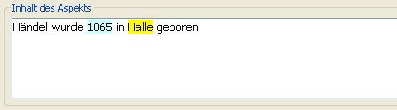
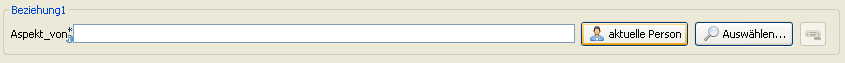
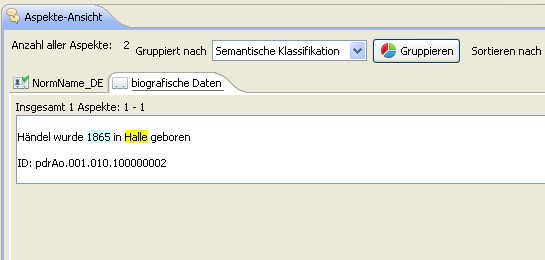

Now an aspect can be created for Händel’s birth place and date of birth. Click on the icon pictured with a speech bubble and star, found in the icon list in the upper left corner of the window. Alternatively, click the button “Aspekt hinzufügen” found in the upper part of the tree-view.

This time the semantic classification “biografische Daten” or “dati biografici” should be selected.

Next, enter the content of the aspect in the text field “Content of Aspect - Notification”

Now select the markup for the date of birth. Choose “Datum” for the Element, “Lebensanfang” for the Type and “Geburt” for the Subtype. Click the button “Set” to add the markup.

The date of birth should now be highlighted in blue.

The place of birth can be created and marked up in the same way.

The content of the aspect should look like the following:

As always, a reference must be added before the aspect can be saved. In addition, under the tab “Relations” it is possible to establish that this aspect belongs to the person Händel. This can be done by clicking the button “Current Person”, found to the right of the text field labeled “Aspect of”.

The person’s name and ID will automatically appear in the text field and can now be saved.

Now a second tab labeled “biografischen Daten” containing the newly added data will appear in the aspect-view.

Further aspects or persons can be created using the same principle.